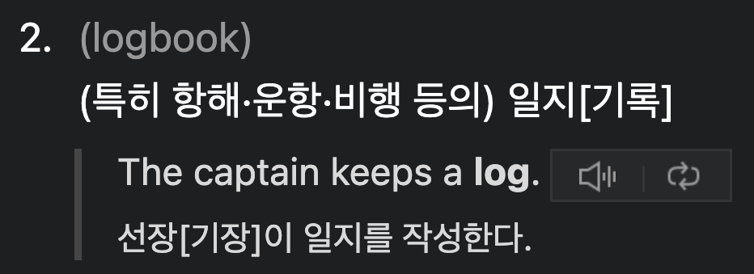

참고한 것들
Log

출처: 네이버 영어사전
- Log 는 위의 사진처럼 어떤 작업의 일지, 기록 등을 뜻하는 단어이다.
- 이와 비슷하게, DBMS 에서 Log 는 DBMS 가 작업한 것에 대한 기록이고, 따라서 Transaction 이 수행한 operation 들이 sequential 하게 파일에 저장된다.
Log Sequence Number, LSN
- 각 log entry 에는 Log Sequence Number (LSN) 라 불리는 증가하는 ID 가 붙는다.
- 즉, LSN 이 더 큰 log entry 는 그렇지 않은 것에 비해 최신의 log 인 것.
- 각 Page 에는 LSN 이 명시되어 있어 해당 page 를 변경한 마지막 log 를 식별할 수 있게 한다.
- 따라서 이것으로 recovery 시에 해당 page 를 변경한 마지막 log 을 빨리 알아내어 복구할 수 있게 된다.
- 각 log 의 내용은 (아마?) fixed size 인 것 같다: 그래서 이 LSN 만으로도 file 의 offset 을 알아낼 수 있다고 한다.
LSN 과 DB replication
- 이놈은 database replication 에도 사용된다고 한다: VR
- 간단하게 생각하면, secondary 에서 primary 의 데이터를 다 들고오는 대신 primary 의 log 만 갖고 와서 replay 하면 primary 와 sync 가 맞기 때문.
Log Types
- DBMS 에서 recovery 가 필요한 상황은 다음과 같이 정리해 볼 수 있다.
- Transaction failure:
- DBMS crash (Node reboot):
- DBMS 혹은 Node (즉, Server) 가 뻗는 경우에 persistent 하게 disk 에 저장되어 있어야 했지만 아직까지는 memory 에만 저장되어 있어서 사라진 애들을 복구할 필요가 있다.
- 이를 위한 log 가 REDO log 이다.
- 그럼 이 각각에 대해 좀 더 알아보자.
Redo Log: Ctrl + Y
- 말 그대로 “이후 상태로 복원하기 위한 로그” 이다.
- 따라서 “이후 상태” 를 로깅해놓고, recovery 시에 이 Redo Log 를 보면서 이후 상태로 되돌리게 된다.
- 위에서 말한것 처럼, 이놈은 committed transaction 을 복구할 때 사용된다.
- NO_FORCE 정책에서는 commit 이 항상 disk 에 저장되지는 않기 때문에, crash 시에 committed transaction 을 이 redo log 를 보면서 transaction 이 정상적으로 끝난 상태로 되돌리게 된다.
- 즉, Durability 를 보장하기 위한 것.
Undo Log: Ctrl + Z
- 말 그대로 “이전 상태로 되돌리기 위한 로그” 이다.
- 따라서 update 를 할 때 “이전 상태” 를 로깅하고, recovery 시에 이 Undo Log 를 보면서 이전 상태로 되돌리게 되는 것.
- 위에서 말한것 처럼, 이놈은 transaction rollback 에 사용된다.
Checkpoint
- Log 에는 이런 작업 기록 말고도 주기적으로 현재 상태에 대해서도 적으면서 recovery 에 사용될 수 있게 한다.
- 이런 애들을 Checkpoint 라고 한다.
- 이게 필요한 이유는 recovery 시간을 단축시키기 위해서 이다.
- Checkpoint 의 가장 큰 역할은 “여기까지는 완벽함” 인데,
- 주기적으로 checkpointing 을 해서 중간중간 이 “여기까지는 완벽함” 지점을 만들어 줌으로써 recovery 해야 하는 양이 너무 많아지지 않게 한다.